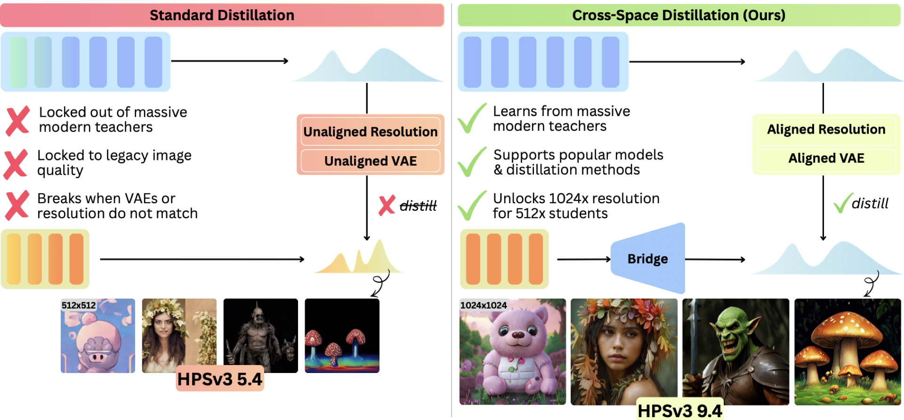
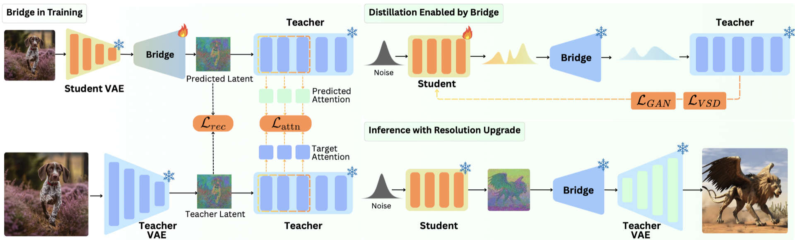
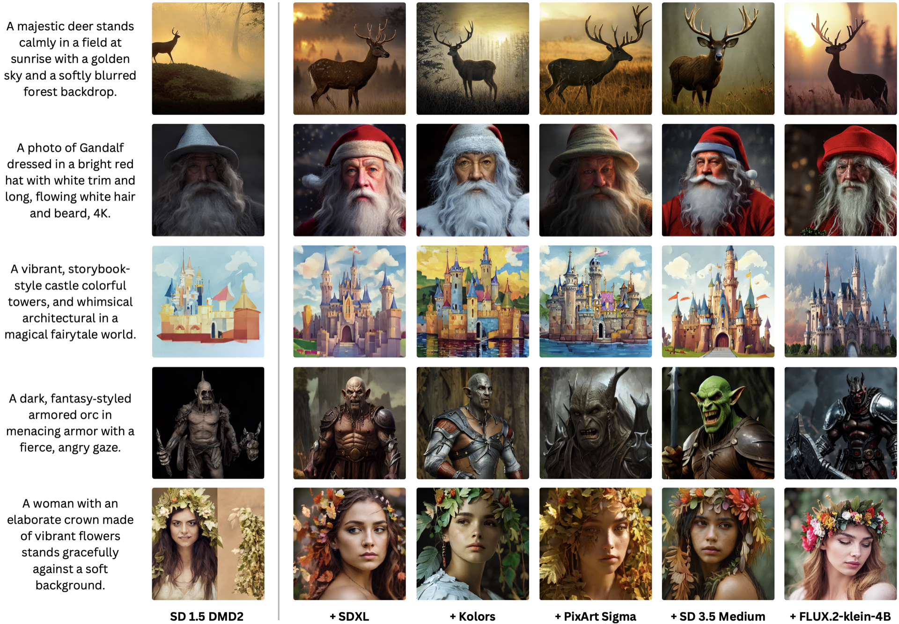
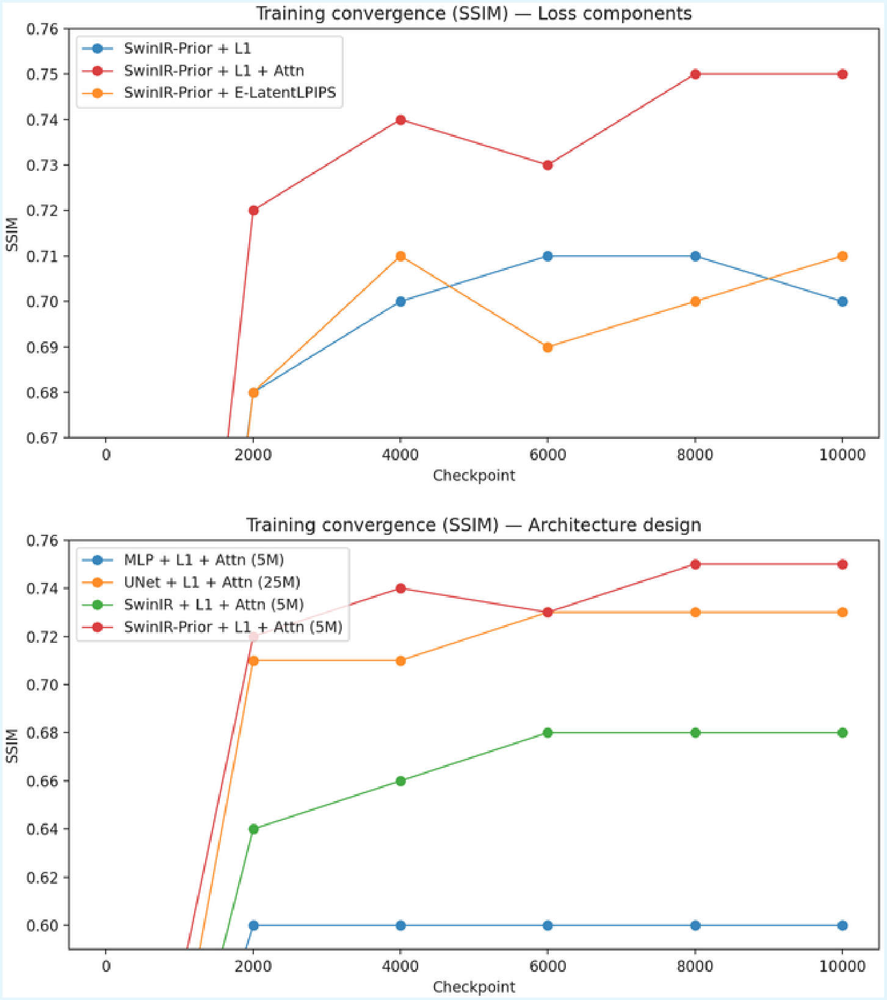
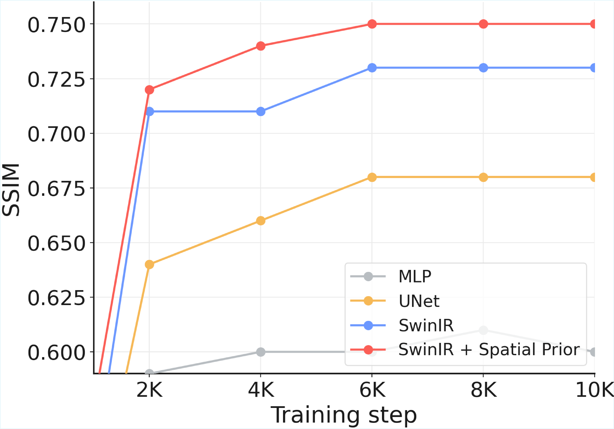
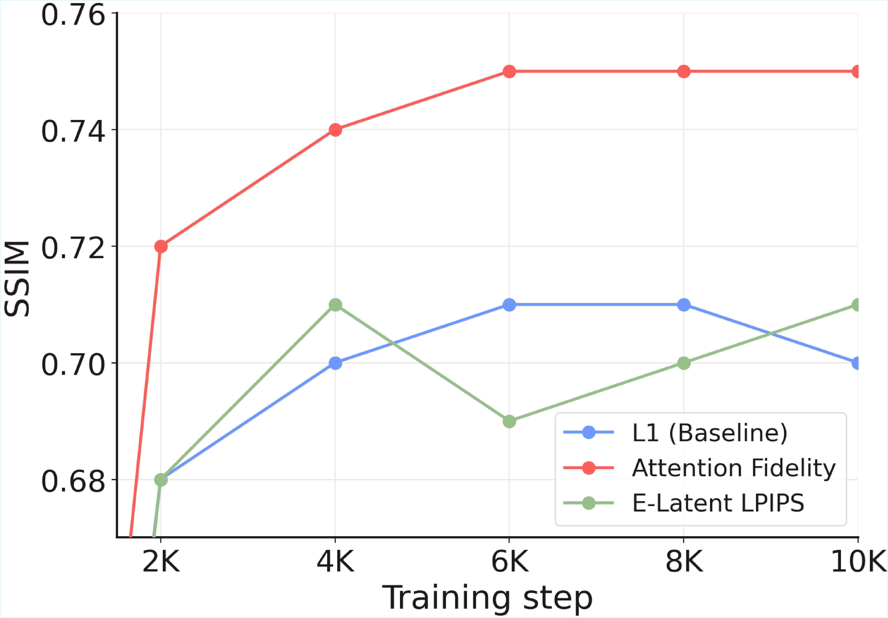
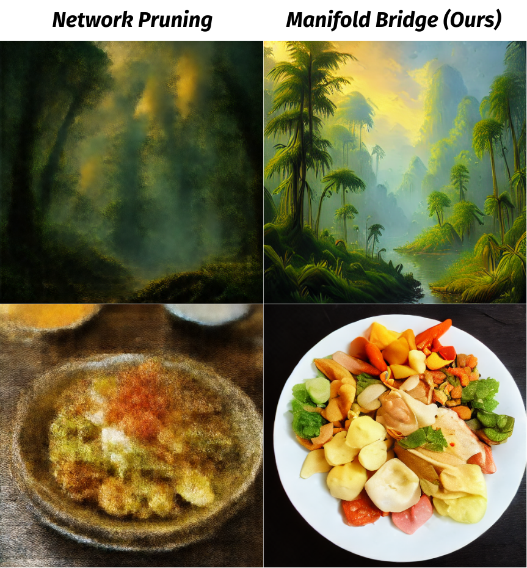

CS766 Final Project
| Tuan Trung Dao* |
| *Work done at Qualcomm with colleagues. |

Abstract
One-step diffusion distillation assumes Teacher and Student share the same latent resolution and VAE, blocking transfer from modern teachers (Flux, SD 3.5) into compact students like SD 1.5. We introduce Cross-Space Distillation and a 5M-parameter Bridge that maps Student latents into the Teacher latent space. Trained with latent reconstruction + attention fidelity, the Bridge boosts SD 1.5 HPSv3 from 5.4 to 9.4 with zero deployment overhead.
The Problem: Shared-Space Constraint
Current one-step distillation methods assume Teacher and Student share same resolution (both 1024×1024) and same VAE (identical image latent space). The best teachers (Flux, SD 3.5) use different resolutions and VAEs than compact students (SD 1.5). State-of-the-art quality is locked away from popular, efficient models.

Four Mismatches Between Teacher & Student
- Cross-Resolution — 1024×1024 vs 512×512
- Cross-VAE — different autoencoders
- Cross-Architecture — DiT / MM-DiT vs UNet. Solved via output-level matching.
- Cross-Mechanism — flow matching vs diffusion. Solved via x0 reparameterization.
Why Does This Matter?
- Unlock the best teachers. Flux and SD 3.5 run at 1024×1024; their quality is inaccessible to compact students today.
- Preserve ecosystems. SD 1.5 has a massive ecosystem (ControlNet, LoRA, style adapters) — custom architectures break it all.
- Practical deployment. 0.86B params, single forward pass, consumer-GPU and edge-device compatible.
Flux (4B, MM-DiT) · SD 3.5 (2.5B, MM-DiT) · SDXL (2.6B, UNet) · Kolors (2.6B, UNet) · PixArt-Σ (0.6B, DiT) → SD 1.5 (0.86B), 1 step, 512×512
Our Approach: A Lightweight Bridge
5M parameters — translates student latents into teacher-compatible latents.

Inference: Bridge only needed during training — zero overhead at deployment. Optionally reused for super-resolution.
Bridge Architecture: Prior + Head

1. Spatial Prior (frozen)
- Reuse student VAE decoder blocks
- 64×64 → 128×128 latent grid
- No learning needed — free upsampling
2. Projection Head (learned)
- SwinIR architecture
- Maps student → teacher feature space
- Only 5M trainable parameters
Training the Bridge: Two Complementary Losses
Latent reconstruction (L1)
- Direct alignment in teacher latent space
- L1 preserves structure better than L2
- Pixel-level supervision signal
Attention Fidelity
- Compares attention maps inside teacher
- Captures long-range semantic structure
- More stable than adversarial losses
- Reverse KL focuses on dominant modes
Training: 2M images · 8×H100 GPUs · only 8 hours · then freeze for distillation.

Results: SD 1.5 Student (0.86B, 1 step)
5.37 → 9.42
21.90 → 28.30
−0.29 → 0.62
Same cost: 0.86B params · 1 forward pass · 512×512 output.
Quantitative Comparison
Cross-Space Distillation improves the one-step Student under every teacher and every metric. Higher is better.
| Architect. | Model | Paras (B) | NFE | HPSv3 | HPSv2 | IR | MPS | DPG |
|---|---|---|---|---|---|---|---|---|
| A. Multi-Step Teachers | ||||||||
| Large U-Net | SDXL | 2.57 | 50 | 9.25 | 28.36 | 0.66 | 13.72 | 74.00 |
| Large U-Net | Kolors | 2.57 | 50 | 10.59 | 30.94 | 0.88 | 14.12 | 76.52 |
| DiT | PixArt-Σ-1024 | 0.61 | 20 | 9.62 | 30.39 | 0.92 | 14.14 | 80.00 |
| MM-DiT | FLUX.2-klein-4B | 4.00 | 50 | 10.05 | 28.90 | 0.80 | 14.00 | 83.20 |
| MM-DiT | SD 3.5 Medium | 2.50 | 50 | 10.86 | 30.02 | 0.96 | 14.13 | 84.50 |
| B. Cross-Space Distillation (one-step Students) | ||||||||
| SD 1.5 Student, DMD2 (init.) | 0.86 | 1 | 5.37 | 21.90 | −0.29 | 10.42 | 59.85 | |
| Large U-Net | + SDXL | 0.86 | 1 | 9.04 | 27.37 | 0.30 | 11.93 | 63.00 |
| Large U-Net | + Kolors | 0.86 | 1 | 9.33 | 27.38 | 0.34 | 11.66 | 64.46 |
| DiT | + PixArt-Σ-1024 | 0.86 | 1 | 8.65 | 26.43 | 0.30 | 11.94 | 63.43 |
| MM-DiT | + FLUX.2-klein-4B | 0.86 | 1 | 9.49 | 26.64 | 0.40 | 12.35 | 64.06 |
| MM-DiT | + SD 3.5 Medium | 0.86 | 1 | 9.42 | 28.30 | 0.62 | 12.96 | 65.75 |
| SD 2.1 Student, SiD (init.) | 0.86 | 1 | 6.42 | 23.74 | 0.10 | 11.29 | 61.33 | |
| Large U-Net | + SDXL | 0.86 | 1 | 8.40 | 26.73 | 0.23 | 11.88 | 67.03 |
| Large U-Net | + Kolors | 0.86 | 1 | 8.52 | 26.57 | 0.20 | 11.91 | 68.34 |
| DiT | + PixArt-Σ-1024 | 0.86 | 1 | 8.42 | 28.29 | 0.44 | 12.20 | 68.51 |
| MM-DiT | + FLUX.2-klein-4B | 0.86 | 1 | 8.74 | 28.31 | 0.33 | 12.03 | 66.00 |
| MM-DiT | + SD 3.5 Medium | 0.86 | 1 | 8.64 | 29.11 | 0.45 | 12.92 | 68.52 |
Qualitative Results: Learning From Every Teacher


Ablations: Every Component Matters



vs. Network Pruning

Bridge Overhead

Works Across Architectures & Paradigms
Single method handles UNet ↔ DiT ↔ MM-DiT · Diffusion ↔ Flow Matching · 4 / 16 / 32 latent channels · 512 ↔ 1024 resolution. All students improve: HPSv3 5.37 → 8.65–9.49.


What We Learned
- Resolution & VAE are the real barriers — not architecture or paradigm. DiT→UNet and flow-matching→diffusion work fine once latent spaces align.
- Reuse pretrained components. Frozen VAE decoder blocks give spatial alignment for free. Only 5M learnable parameters; trains in 8 hours.
- Attention-based > adversarial supervision. Attention Fidelity loss is stable, globally aware, hyperparameter-friendly. No training collapse.
- Model merging consolidates multi-teacher knowledge. Simple parameter averaging of separately distilled students yields further gains (+96% HPSv3).
Future Directions
- Video generation — extend Cross-Space distillation to temporal models.
- Conditioning alignment — handle different text encoders (CLIP vs T5) explicitly.
- Arbitrary resolutions — beyond the 512→1024 setting.
- General latent interfaces — Bridge as universal adapter between heterogeneous generative models.